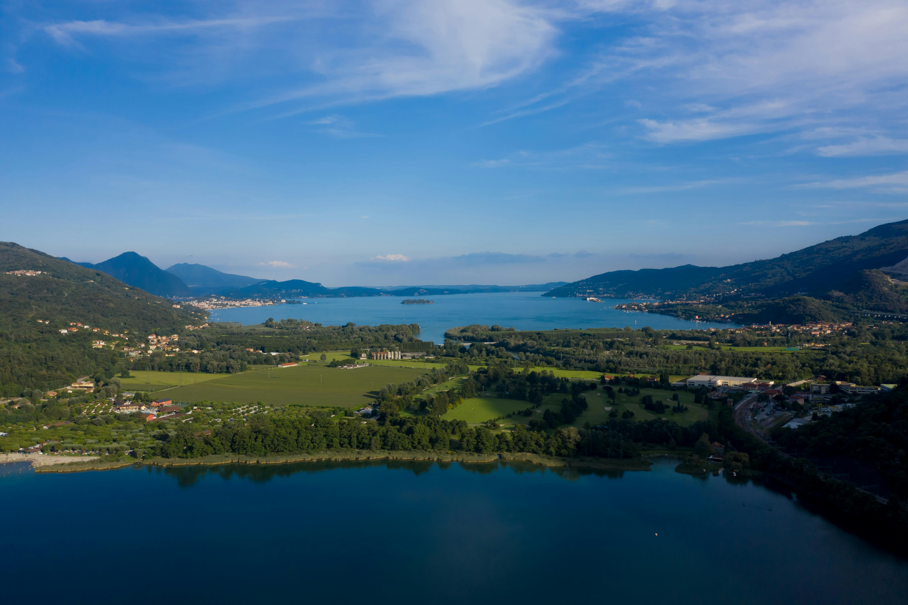

Popular Treks

Kashmir Great Lakes
Moderate to Difficult
7-8 days
Jul-Sep
4,191 m
Stunning trek across alpine lakes like Vishansar, Gangbal, and Gadsar. Each day reveals a new lake, each with its unique charm and color. The trek also passes through beautiful meadows and high mountain passes.
View Details
Tarsar Marsar Trek
Moderate
6-7 days
Jul-Sep
4,000 m
Twin lakes surrounded by snowy peaks. A moderate trek with lush meadows. The almond-shaped Tarsar and the kidney-shaped Marsar lakes are set amidst stunning landscapes of wildflower meadows and pine forests.
View Details
Thajiwas Glacier
Easy
1 day
May-Sep
3,070 m
Easy hike near Sonamarg offering glacier views, perfect for a day trek. This accessible trek is ideal for beginners and families, providing a taste of Kashmir's mountain beauty without requiring extensive trekking experience.
View Details